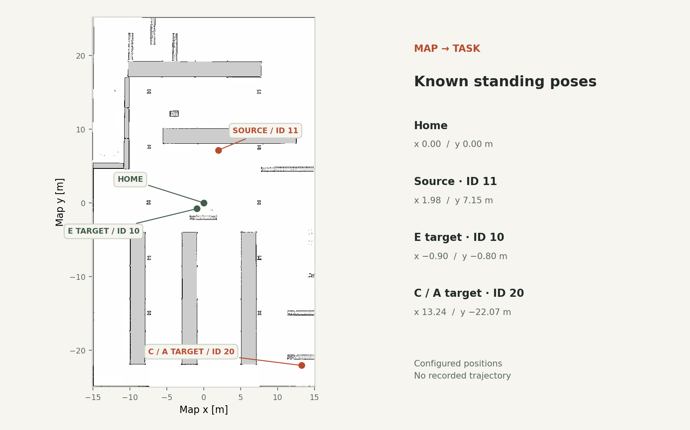

Robotics / Course project
Warehouse mobile manipulation
A ROS 2 course project combining mobile navigation, arm kinematics and vacuum pick-and-place.

Supplied occupancy map with configured pickup and delivery poses
Project overview
Coordinate a mobile base and manipulator around known pickup and delivery locations.
Approach
- Nav2 action clients and sequential or behaviour-tree task logic.
- URDF-based forward kinematics, frame conversion and numerical inverse kinematics.
- Joint-trajectory commands, vacuum-gripper interfaces and AMCL localization concepts.
Engineering focus
Task coordination, navigation, kinematics and ROS integration.